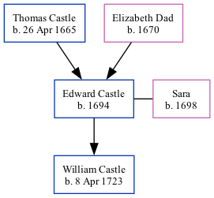

The child of Thomas Castle and Elizabeth DadEdward Castle, the 6 times great-grandfather of Nigel Horne, was born in 16941, was baptized in St. Marys, Capel Le Ferne, Kent, England on Jun 24, 1694 andhad 1 child, with Sara: William, .
Public Member Trees Online publication - Provo, UT, USA: The Generations Network, Inc., 2006.Original data - Family trees submitted by Ancestry members.Original data: Family trees submitted by Ancestry members.
Family Tree

Interactive Map
Map
Generated by ged2site. Last updated on Feb 18, 2025